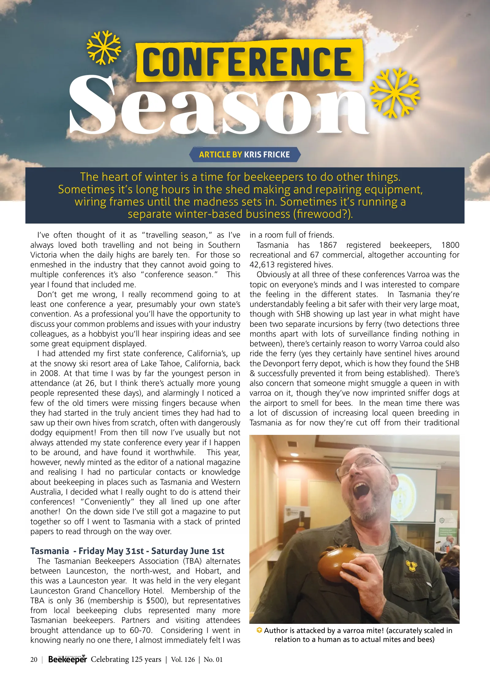

I’ve often thought of it as “travelling season,” as I’ve
always loved both travelling and not being in Southern
Victoria when the daily highs are barely ten. For those so
enmeshed in the industry that they cannot avoid going to
multiple conferences it’s also “conference season.” This
year I found that included me.
Don’t get me wrong, I really recommend going to at
least one conference a year, presumably your own state’s
convention. As a professional you’ll have the opportunity to
discuss your common problems and issues with your industry
colleagues, as a hobbyist you’ll hear inspiring ideas and see
some great equipment displayed.
I had attended my first state conference, California’s, up
at the snowy ski resort area of Lake Tahoe, California, back
in 2008. At that time I was by far the youngest person in
attendance (at 26, but I think there’s actually more young
people represented these days), and alarmingly I noticed a
few of the old timers were missing fingers because when
they had started in the truly ancient times they had had to
saw up their own hives from scratch, often with dangerously
dodgy equipment! From then till now I’ve usually but not
always attended my state conference every year if I happen
to be around, and have found it worthwhile. This year,
however, newly minted as the editor of a national magazine
and realising I had no particular contacts or knowledge
about beekeeping in places such as Tasmania and Western
Australia, I decided what I really ought to do is attend their
conferences! “Conveniently” they all lined up one after
another! On the down side I’ve still got a magazine to put
together so off I went to Tasmania with a stack of printed
papers to read through on the way over.
Tasmania - Friday May 31st - Saturday June 1st
The Tasmanian Beekeepers Association (TBA) alternates
between Launceston, the north-west, and Hobart, and
this was a Launceston year. It was held in the very elegant
Launceston Grand Chancellory Hotel. Membership of the
TBA is only 36 (membership is $500), but representatives
from local beekeeping clubs represented many more
Tasmanian beekeepers. Partners and visiting attendees
brought attendance up to 60-70. Considering I went in
knowing nearly no one there, I almost immediately felt I was
in a room full of friends.
Tasmania
has
1867
registered
beekeepers,
1800
recreational and 67 commercial, altogether accounting for
42,613 registered hives.
Obviously at all three of these conferences Varroa was the
topic on everyone’s minds and I was interested to compare
the feeling in the different states. In Tasmania they’re
understandably feeling a bit safer with their very large moat,
though with SHB showing up last year in what might have
been two separate incursions by ferry (two detections three
months apart with lots of surveillance finding nothing in
between), there’s certainly reason to worry Varroa could also
ride the ferry (yes they certainly have sentinel hives around
the Devonport ferry depot, which is how they found the SHB
& successfully prevented it from being established). There’s
also concern that someone might smuggle a queen in with
varroa on it, though they’ve now imprinted sniffer dogs at
the airport to smell for bees. In the mean time there was
a lot of discussion of increasing local queen breeding in
Tasmania as for now they’re cut off from their traditional
ARTICLE BY KRIS FRICKE
The heart of winter is a time for beekeepers to do other things.
Sometimes it’s long hours in the shed making and repairing equipment,
wiring frames until the madness sets in. Sometimes it’s running a
separate winter-based business (firewood?).
Author is attacked by a varroa mite! (accurately scaled in
relation to a human as to actual mites and bees)
20 |
Celebrating 125 years | Vol. 126 | No. 01